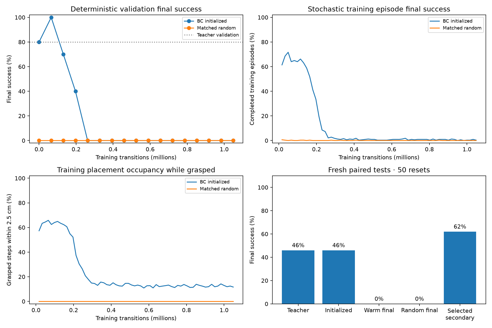
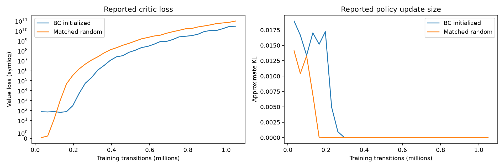

Stage 1 · fresh paired training · no stopping postprocessor
Can PPO preserve and improve a cloned manipulation policy?
Selected warm PPO: 31/50 final successes; BC teacher: 23/50. Continued fine-tuning to the fixed budget regressed to 0/50, matching the random control’s 0/50. The selected result is secondary; stable PPO improvement remains unproven.
One training seed per arm. The matched random actor shares BC-derived preprocessing, ReLU architecture, exploration, critic initialization and optimizer settings. It is not the archived original Gaussian PPO recipe. Higher return with lower final success is regression. Privileged or observation-only hybrid recoveries are excluded.
The actor transplant reproduced BC exactly on 500 validation observations and ten full validation rollouts. Both actual initial models, critic/non-actor fingerprints and RNG digests were saved. Each learner then received 1,048,576 transitions with the original reward, controller, horizon and task success rule.

What happened during stochastic training?
These counts exclude validation and tests. Correlated training steps are not independent trials. Official task success does not itself require a recorded grasp; rare successful states do not establish learned picking. Episode counts exclude unfinished episodes at the final rollout boundary.
Optimizer stability
These console metrics describe the preceding optimizer update at each logging point. Critic feature clipping bounds inputs, not learned values or bootstrapped targets. Rising value loss is not by itself proof of a code-path bug.

Optimizer trace
Native held-out rollouts
The first two predeclared test seeds, without outcome-based video selection. All stored non-trajectory fields match the corresponding test episodes.
Predeclared test seed 150000
BC teacherPPO warm finalMatched random finalPredeclared test seed 150001
BC teacherPPO warm finalMatched random final
Initialization, safeguards and selection
The actor keeps fixed BC normalization and ReLU weights. Ordinary Gaussian exploration is centered on the actor’s tanh-bounded mean, so PPO stores and scores the raw sample without inverse-tanh boundary inversion. Only critic inputs are clipped to ±10. Both arms share initial std exp(−3), learning rate 0.00003 and target-KL 0.01. KL early stopping may produce different numbers of optimizer updates; transition budgets match. No BC auxiliary loss, critic warmup, curriculum or reward modification is used.
The selected warm checkpoint is step 65,536, ranked by final success, then any-step success, then return. It is secondary; a step-zero selection is not successful PPO improvement. Validation runs before the corresponding optimizer update and final weights after the last update.
An earlier squashed-Gaussian implementation pilot produced NaNs and was excluded before final testing. The revised recipe was redeclared after exact transfer and finite stochastic-update checks; its runs start fresh. Historical raw/bounded comparison caveats are not retroactively erased.
Evidence
Protocol, versions and source hashes · Teacher-transfer verification · Loaded-checkpoint and source verification · Test metrics · Geometry and failures · Actual warm initialization · Actual control initialization · Training totals · Warm stochastic windows · Control stochastic windows · Video hashes